Chapter 4 Visualisering - ggplot2 dag 2

4.1 Indledning og videoer
I dag udvider vi værktøjskassen af kommandoer i ggplot2 for at tillade større fleksibilitet og appel i dine visualiseringer. Jeg anbefaler at du ser videoerne inden undervisningstimerne og bruger notaterne som en slags reference samtidig at du arbejder med problemstillingerne.
4.1.1 Læringsmålene
I skal være i stand til at:
- Arbejde fleksibelt med koordinat systemer - transformering, modificering og flipping af x- og y-aksen.
- Udvide brugen af farver og form.
- Tilføje tekst direkte på plottet med
geom_text(). - Bruge
facet_grid()ellerfacet_wrap()til at lave yderligere opdeling af plots. - Gemme dit færdigt plot i en fil.
library(ggplot2) #husk4.1.2 Video ressourcer
- Video 2: Koordinat systemer
Link her hvis det ikke virker nedenunder: https://player.vimeo.com/video/544201985
- Video 3: Farver og punkt former
Link her hvis det ikke virker nedenunder: https://player.vimeo.com/video/544218153
- Video 4: Labels -
geom_text()oggeom_text_repel()
Link her hvis det ikke virker nedenunder: https://player.vimeo.com/video/544226498
4.2 Koordinat systemer
Her arbejder vi videre med koordinater i pakken ggplot2.
4.2.1 Zoom på plottet (coord_cartesian())
Man kan bruge funktionen coord_cartesian() til at zoome ind på et bestemt område i plottet. Indenfor coord_cartesian() angiver man xlim() og ylim(), som specificerer de øvre og nedre grænser langt henholdsvis x-aksen og y-aksen. Man kan også bruge xlim() og ylim() udenom coord_cartesian(), men i dette tilfælde bliver punkterne, som ikke kan ses i plottet (fordi deres koordinater ligger udenfor de angivne grænser), smidt væk, og så får man en advarsel. Med coord_cartesian() beholder man til gengæld samtlige data, og man får således ikke en advarsel.
Her ses vores oprindeligt scatter plot:
ggplot(iris, aes(x = Sepal.Length, y = Sepal.Width,color = Species)) +
geom_point() +
theme_minimal() 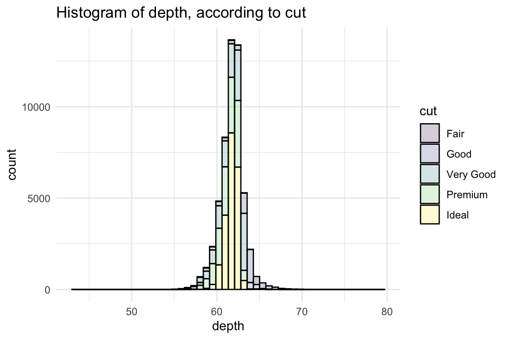
Og her bruger vi funktionen coord_cartesian() med xlim() og ylim() indenfor til at zoome ind på et ønsket område på plottet.
ggplot(iris, aes(x = Sepal.Length, y = Sepal.Width,color = Species)) +
geom_point() +
coord_cartesian(xlim = c(4,6), ylim = c(2.2,4.5)) +
theme_minimal() 
Hvis man har lyst til det kan man også zoome ud ved at bruge expand_limits(). For eksempel hvis jeg gerne vil have punkterne \(x = 0\) og \(y = 0\) (c(0,0), eller “origin”) med på plottet:
ggplot(iris, aes(x=Sepal.Length, y=Sepal.Width,col=Species)) +
geom_point() +
expand_limits(x = 0, y = 0) +
theme_minimal() 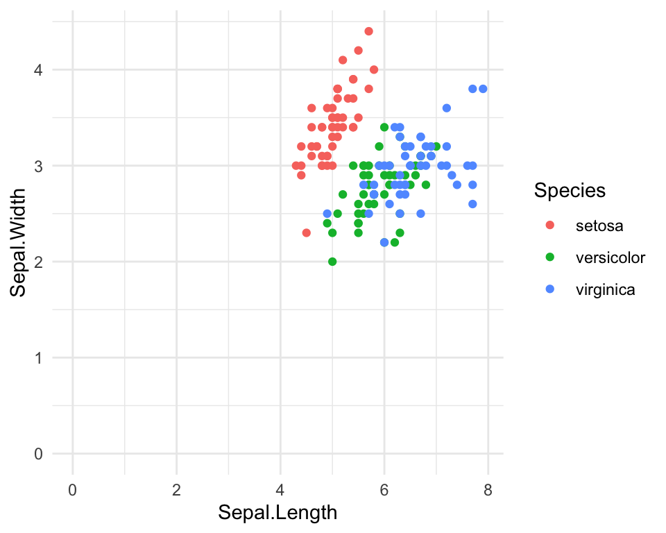
4.2.2 Transformering af akserne - log, sqrt osv (scale_x_continuous).
Nogle gange kan det være svært at visualisere nogle variabler på grund af deres fordeling. Er der mange outliers i variablen så er de fleste punkter samlede i et lille område i plottet. Transformering med log and sqrt på x-aksen og y-aksen. Vi kan bruge disse til at transformere skaleringen på akserne, så de data kan ses på en mere informativ måde.
ggplot(iris, aes(x=Sepal.Length, y=Sepal.Width,col=Species)) +
geom_point(size=3) +
scale_x_continuous(trans = "log2") +
scale_y_continuous(trans = "log2") +
theme_minimal() 
Man kan også prøve fk. “sqrt” i stedet for “log2.” Formålet er, at hvis de data fordeler sig mere ‘normalt,’ kan man nemmere visualiser det i et plot - en måde til at gøre der er ved at transformere de data med “sqrt” eller “log2.”
4.2.3 Flip coordinates (coord_flip)
Vi kan bruge coord_flip() til at spejler x-aksen på y-aksen og omvendt (det svarer til, at man drejer plottet ved 90 grader).
#Sepal.Group defineret som i går
iris$Sepal.Group <- ifelse(iris$Sepal.Length>mean(iris$Sepal.Length),"Long","Short")
ggplot(iris,aes(x=Species,fill=Sepal.Group)) +
geom_bar(stat="count",position="dodge",color="black") +
coord_flip() +
theme_minimal()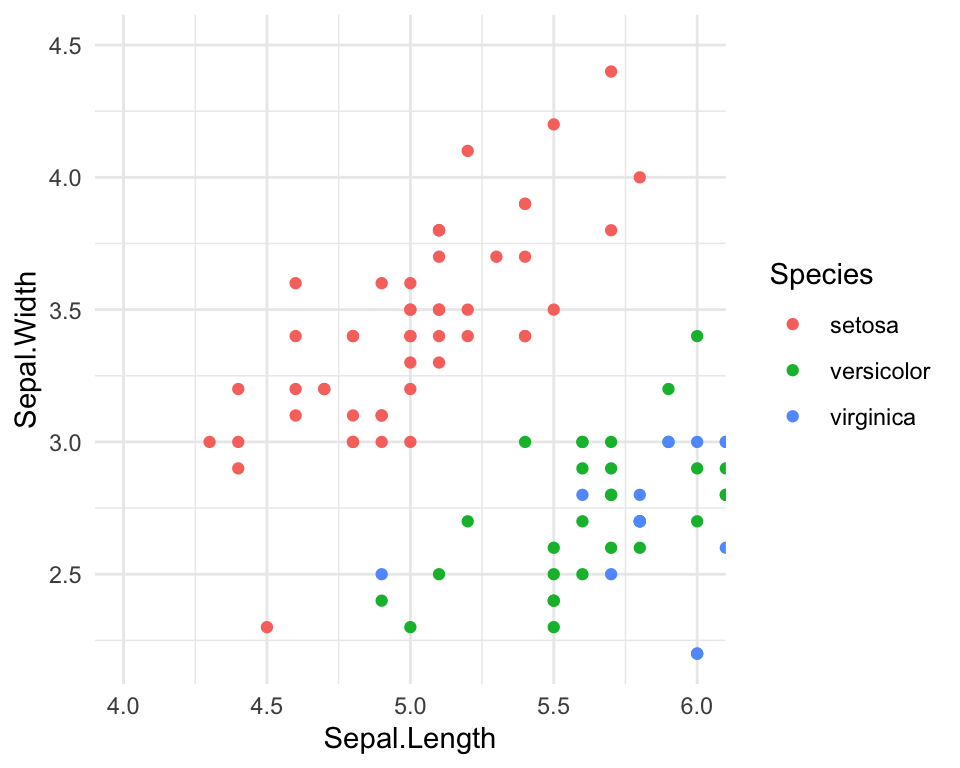
Man kan ændre på rækkefølgen af de tre Species ved at bruge funktionen scale_x_discrete() og angiver den nye rækkefølger med indstillingen limits:
ggplot(iris,aes(x=Species,fill=Sepal.Group)) +
geom_bar(stat="count",position="dodge",color="black") +
coord_flip() +
scale_x_discrete(limits = c("virginica", "versicolor","setosa")) +
theme_minimal()
4.3 Mere om farver og punkt former
Der er flere måder at specificere farver på i ggplot2. Man kan vælger den automatiske løsning, som er hurtigt (og effektiv i mange kontekster), eller kan man bruge den manuelt løsning (som kan tager lidt mere tid men er nyttige hvis man gerne vil lave et plot til at præsentere til andre.)
4.3.1 Automatisk farver
Man kan automatisk specificere at vi gerne vil have forskellige farver, ligesom vi gjorde i går med colour=Species indenfor aes() i ggplot funktion.
#automatisk løsning
ggplot(iris, aes(x=Sepal.Length, y=Sepal.Width, colour=Species)) +
geom_point() +
theme_minimal() 
4.3.2 Farver manuelt
Hvis man foretrækker at specificere sine egne farver, kan man det ved at benytte scale_colour_manual.
#manuelt løsning
ggplot(iris, aes(x=Sepal.Length, y=Sepal.Width, colour=Species)) +
scale_colour_manual(values=c("purple", "yellow","pink")) +
geom_point() +
theme_minimal() 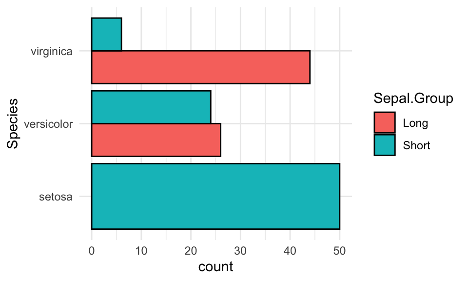
Man kan også bruge farver fra RColorBrewer-pakken. Pakken indeholder mange forskellige “colour palettes,” som er gruppe af farver som passer godt med hinanden, så at man kan slipper for at vælge den bedste kombination af farver til deres plot. De palettes tager også i betragtning, fk. hvis man er farveblind, eller om man vil have en farvegradient eller et sæt diskrete farver som ikke ligner hinanden.
Der er andre pakke som også har andre colour palettes som man kan bruge, som jeg anbefaler at I tjekke ud på Google hvis interesseret.
#install.packages("RColorBrewer")
library(RColorBrewer)
#manuelt løsning
ggplot(iris, aes(x=Sepal.Length, y=Sepal.Width, colour=Species)) +
scale_color_brewer(palette="Set1") +
geom_point() +
theme_minimal() 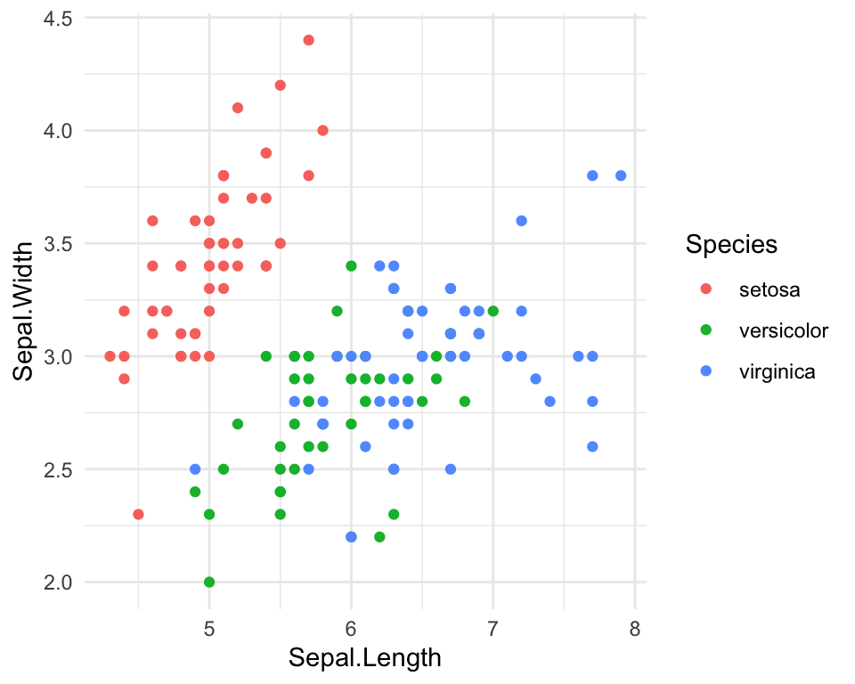
Bemærk, at scale_color_brewer() eller scale_color_maual() sætte farver af punkt og linjer, mens i en boxplot eller barplot sammenhænge, ligesom man specificerede fill=Species indenfor aes(), bruger man scale_fill_manual() eller scale_fill_brewer() i tilfældet af RColourBrewer.
ggplot(iris,aes(x=Species,y=Sepal.Length,fill=Species)) +
geom_boxplot() +
scale_fill_brewer(palette="Set2") +
theme_minimal()
Her er en tabel over de fire funktioner.
| fuktion | beskrivelse |
|---|---|
scale_fill_manual(values=c("firebrick3","blue")) |
manuelle farver til boxplots og barplots osv. |
scale_color_maual(values=c("darkorchid","cyan4")) |
manulle farver til punkter og linjer osv. |
scale_fill_brewer(palette="Dark2") |
RColourBrewer løsning til boxplots/barplots/osv. |
scale_color_brewer(palette="Set1") |
RColourBrewer løsning til punkter og linjer osv. |
Der er også andre, for eksempel for continuous scala kan man google efter scale_fill_gradient.
Farver i RColourBrewer
Bare som reference for de forskellige farver tilgængelige i pakken RColourBrewer.

Mulige colour palettes tilgængelige i RColourBrewer
4.3.3 Punkt former
Ligesom man kan lave forskellige farver, kan man også lave forskellige punkt former.
Vi starter med den automatiske løsning ligesom vi gjorde med farver. Når det er en variable vi specificer, skal vi skrive indenfor aes(). Her, da shape er en parameter som er meget specifik til geom_point, her vælger vi at sætte den indenfor en ny aes() indenfor geom_point() i stedet for indenfor ggplot(). Husk, at i funktionen ggplot() specificerer vi globale ting som gælder for hele plot, og i funktionen geom_pont() ting som gælder kun for geom_point().
ggplot(data=iris, aes(x = Sepal.Length, y = Sepal.Width)) +
scale_color_brewer(palette="Set2") +
geom_point(aes(shape=Species)) +
theme_minimal()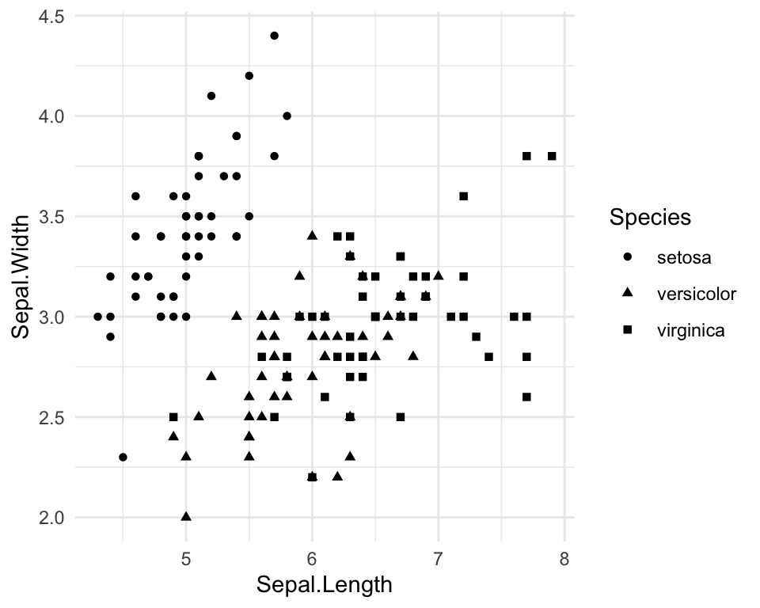
Så har vi fået en kombination af båre forskellige farver og punkter til hver Species.
Sætte punkte former manuelt
Hvis vi ikke kan lide de tre punkt former vi få automatisk, kan vi ændre dem ved at bruge scale_shape_manual - her vælger jeg values=c(1,2,3), men der er en reference nedenunder, hvor I kan se, de mappings mellem de numeriske tal og de punkt former, så at I kan vælger jeres egne.
ggplot(data=iris, aes(x = Sepal.Length, y = Sepal.Width, colour=Species)) +
geom_point(aes(shape=Species)) +
scale_color_brewer(palette="Set2") +
scale_shape_manual(values=c(1,2,3)) +
theme_minimal()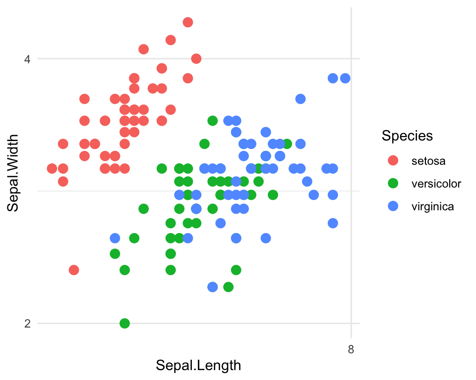
Reference for punkt former

4.4 Annotations
4.4.1 Tilføje labeller direkte på plottet.
Man kan bruge geom_text() til at tilføje tekst på punkterne direkte på plottet. Her skal man fortælle, hvad for nogle tekst skal være på plottet - her specificerer vi navne på biler fra datasættet mtcars. Plottet er en scatter plot mellem variabler mpg og wt.
data(mtcars)
ggplot(mtcars,aes(x=mpg,y=wt)) +
geom_point() +
geom_text(label=row.names(mtcars)) +
theme_minimal()
For at gøre det nemmere at læse kan man også fjerne de punkter:
ggplot(mtcars,aes(x=mpg,y=wt)) +
#geom_point() +
geom_text(label=row.names(mtcars)) +
theme_minimal()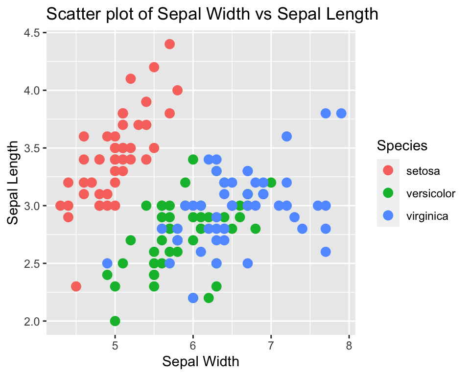
Teksten på plottet er stadig meget svært at læse. En god løsning kan være at bruge R-pakken ggrepel.
4.4.2 Pakken ggrepel for at tilføje tekst labeller
#install.packages(ggrepel) #installere hvis nødvendeigtFor at anvende pakken ggrepel for det mtcars datasæt. Man erstatter bare geom_text() med geom_text_repel().
library(ggrepel)
ggplot(mtcars,aes(x=mpg,y=wt)) +
geom_point() +
geom_text_repel(label=row.names(mtcars)) +
theme_minimal()## Warning: ggrepel: 9 unlabeled data points (too many overlaps). Consider
## increasing max.overlaps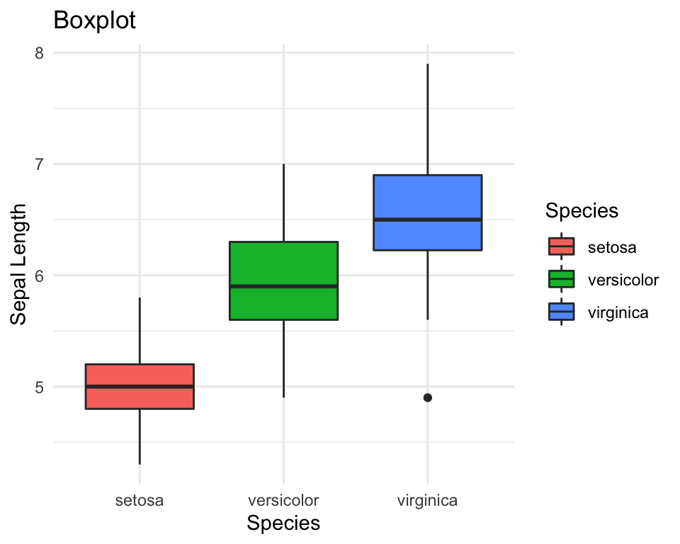
Så kan vi se, at nu er der ingen navne som sidder lige overfor hinanden, fordi ggrepel har været dygtig til at placerer dem tæt på deres punkter med ikke ovenpå hinanden. Man kan også se her at der er nogle punkter, hvor funktionen har tilføjet en linje her for at gøre det klart, de punkt teksten referer til.
Man kan se, at vi fik en advarsel her. Så vi kan prøve hvad vi er blevet bedt om her, og fortæl, at vi vil have max.overlaps måske 20.
library(ggrepel)
ggplot(mtcars,aes(x=mpg,y=wt)) +
geom_point() +
geom_text_repel(label=row.names(mtcars),max.overlaps = 20) +
theme_minimal()
Så vi kan se, at vi ikke længere få en advarsel, og vi har tekst for alle vores punkter her.
4.4.3 Tilføje rektangler i regioner af interesse (annotate)
Ekstra: hvis man gerne vil fremhæv en bestemt region i plottet, kan man prøve annotate. Prøve at selv regne ud, hvad de muligheden indenfor annotate gå ud på.
ggplot(mtcars,aes(x=mpg,y=wt)) +
geom_point() +
geom_text_repel(label=row.names(mtcars)) +
annotate("rect",xmin=18,xmax=23,ymin=2.5,ymax=3,alpha=0.2,fill="orange") +
theme_minimal()## Warning: ggrepel: 9 unlabeled data points (too many overlaps). Consider
## increasing max.overlaps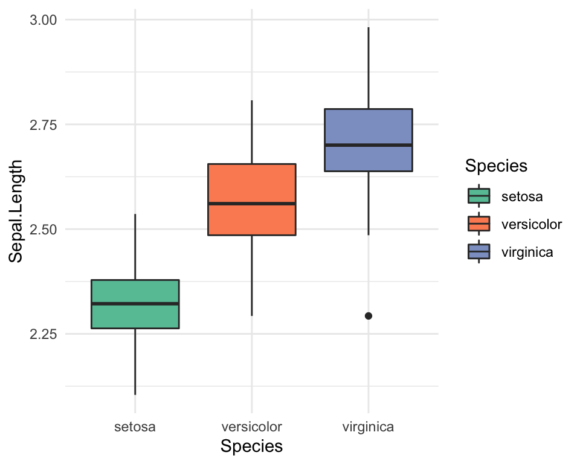
Man kan også tilføje nogle tekst på en bestemt lokation med annotate:
ggplot(mtcars,aes(x=mpg,y=wt)) +
geom_point() +
geom_text_repel(label=row.names(mtcars)) +
annotate("rect",xmin=18,xmax=23,ymin=2.5,ymax=3,alpha=0.2,fill="orange") +
annotate("text",x=25,y=2.75,label="Cars of interest",col="orange") +
theme_minimal()## Warning: ggrepel: 9 unlabeled data points (too many overlaps). Consider
## increasing max.overlaps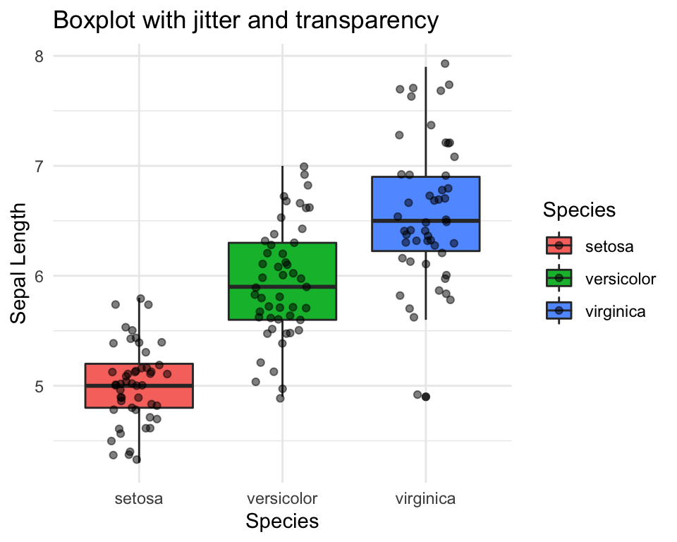
4.5 Opdele plots (facet_grid/facet_wrap)
En stor fordele af at bruge ggplot er evne til at lave en facet_grid til at adskille grupperne i en variable over separate plotter. For eksempel:
ggplot(iris,aes(x=Sepal.Length,fill=Species)) +
geom_density(alpha=0.5) +
theme_minimal()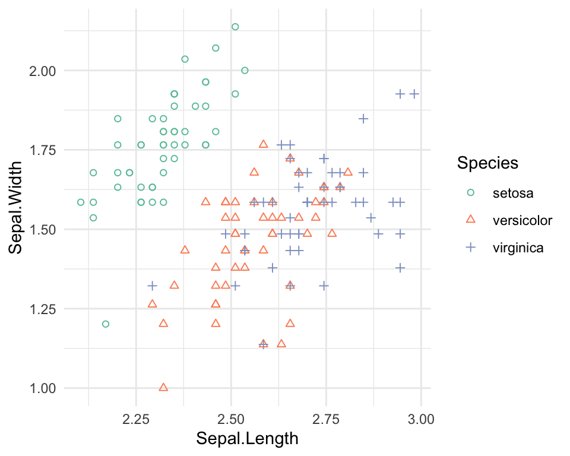
bliver (ligger mærke til ~ her, som betyder at vi gerne vil opdele efter Species):
ggplot(iris,aes(x=Sepal.Length,fill=Species)) +
geom_density(alpha=0.5) +
facet_grid(~Species) +
theme_minimal()
Vi leger lidt videre med facet_grid() i problemstillinger nedenfor.
4.6 Problemstillinger
1) Lave quiz - “Quiz - ggplot2 part 2”
Vi arbejder med Palmer Penguins.
Data beskrivelse: The palmerpenguins data contains size measurements for three penguin species observed on three islands in the Palmer Archipelago, Antarctica.
#install.packages("palmerpenguins") #køre hvis ikke allerede installeret
library(palmerpenguins)
library(ggplot2)
library(tidyverse)
head(penguins)FALSE # A tibble: 6 × 8
FALSE species island bill_length_mm bill_depth_mm flipper_length_… body_mass_g sex
FALSE <fct> <fct> <dbl> <dbl> <int> <int> <fct>
FALSE 1 Adelie Torge… 39.1 18.7 181 3750 male
FALSE 2 Adelie Torge… 39.5 17.4 186 3800 fema…
FALSE 3 Adelie Torge… 40.3 18 195 3250 fema…
FALSE 4 Adelie Torge… NA NA NA NA <NA>
FALSE 5 Adelie Torge… 36.7 19.3 193 3450 fema…
FALSE 6 Adelie Torge… 39.3 20.6 190 3650 male
FALSE # … with 1 more variable: year <int>Man kan bruge ?penguins for at se flere detaljer om variable navner.
I skal starte med at rydde op lidt med datasættet. Køre følgende for at fjerne række som har NA værdier:
penguins <- drop_na(penguins)2) Histogram
Lave en histogram:
flipper_length_mmpå x-aksen- brug
filltil at opdele efterspecies - specificer sort linjer omkring de bars, så man mere tydeligt kan se dem
- specificer hensigtsmæssige tekst (akserne, titel) og et tema
I få en advarsel: stat_bin() using bins = 30. Pick better value with binwidth.
- Prøve at ændre indstillingen
binstil noget andet indenforgeom_histogram().
Det skal ser sådan ud:

3) Density plots og introduktion til facet_grid()
a) Lave et density plot af body_mass_g.
- Bruge
filltil at opdele eftersex - Gøre dine density plots gennemsigtige
- Skrive en sætning om forskellen i
body_mass_gmellem females og males. - Hvorfor tror du, at de densities har flere topper?
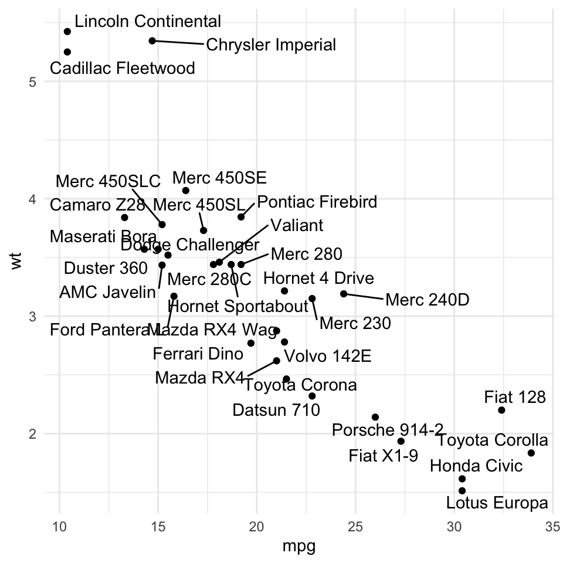
b) Vi vil gerne adskille vores densities yderligere, efter species.
- Nu tilføj linjen
facet_grid(~species)til dit plot og opdag, hvad der sker. - Skriv endnu en sætning, som beskriver forskellen i
body_mass_gmellem de to køn over de trespecies.
4) Manuelt farver og punkter a) Lave en scatter plot med ggplot:
bill_length_mmpå x-aksenbill_depth_mmpå y-aksen- give hver
speciessin egen farve (automatisk) - sætte et tema
b) Lav følgende ændringer til det plot:
- Ændre farver manuelt - prøve både at angive farver med
scale_color_manualog afprøve også løsningen med pakkenRColorBrewer(husk at installere/indlæse pakken hvis nødvendigt). - Angiv at der skal være forskellige punkt former for hver
species. - Prøv at vælge nogle punkt former fra listen og specificer dem manuelt.

Figure 4.1: Min løsning
5) Coordinate systemer
Tag overstående scatter plot fra 4) og
- bruge
coord_cartesian()så at man fanger kun en bill længde mellem 40 og 50, og en bill depth mellem 16 og 19.
- som ekstra afprøve pakken
ggrepel(husk at installere/inlæse) ved at tilføje de navne af de forskellige øer som labels direkte på plottet (valfrig opfordring: man kan lave en subset af de data og specificere det indenfor den relevantggreplfunktion, for at undgå, at de labels bliver plottet for punkterne udenfor området angivet medcoord_cartesian()).
Figure 4.2: Min løsning
6) Coordinate systemer
Lave en bar plot af counts for species opdelte efter sex.
- Anvende en ‘coordinate flip’ for at få den til at være horizontal.
- Vælge nogle manuelt farver.
- Vælge et tema som I godt kan lide.

Figure 4.3: Min løsning
- I vil have at de tre arter få rækkefølgen, således at den
speciesmed de meste observationer er på toppen og denspeciesmed den færrest er på bunden. Ændre rækkefølgen af de trespecies. - Prøve også
scale_y_reverse()og kig på resultatet.
7) Lave boxplots af body_mass_g opdelte efter species.
Tilføj punkter ovenpå.
Specificere nogle farver manuelt for de boxes.
Giv det en hensigtsmæssig titel og nogle akser-labels
Adskille plotterne ved at opdele efter de forskellige
islands.Ekstra: skrive en sætning om
body_mass_gser forskellige ud forAdelieover de treislands.Ekstra: udforsk
?geom_violinsom erstatning forgeom_boxplot.
8) Annotations. a) Lav et scatter plot af bill_length_mm vs bill_depth_mm.
- Anvend hensigtsmæssigt titel/labels/tema
- Anvend forskellige farver for de tre
species. - Tjekke funktionen
?annotateog bruge den medgeom="text"og hensigtsmæssigt x- og y-akse værdier til at tilføjespeciesnavne som tekst direkte på plottet (se eksempel nedenfor for at se, hvad jeg mener). - Udforske hvordan man gøre teksten større, som jeg har gjorte i men løsning.
- Fjerne den legend med
show.legend = FALSEindenforgeom_point() - Ekstra: bruge
annotateigen til at lave et orange rektangel omkring alle de blå punkter (se kursusnotaterne).

b) Vi vil gerne tilføje noget lodrette og vandrette linjer til plottet som specificer de middelværdier af de tre fordelinger.
- Bruge
tapplytil at beregne de gennemsnitlige værdier for henholdsvisbill_length_mmogbill_depth_mmopdelte efterspecies. - Lave en dataramme, med kolonner
species,mlengthogmdepth, hvormlengthogmdepther dine middelværdier for henholdsvisbill_length_mmogbill_depth_mm. Kalde det formydf. Fk.
## species mlength mdepth
## Adelie Adelie 38.82397 18.34726- For de lodrette linjer anvende
geom_vline()og specificere din ny dataramme indenfor meddata=mydf. Tilføj ogsåxintercept=mlengthogcolour=species(husk at damlengthogspecieser variabler framydfskal man brugeaes())
- Tilføje de relevante vandrette linjer.
- Specificer “dashed” linjer
Plotten skal ser sådan ud

9) Valgfri: Lav et scatter plot og inddrag ?scale_colour_gradient2 (se fk. https://michaeltoth.me/a-detailed-guide-to-ggplot-colors.html)
4.7 Workshop opgave (OBS Fredag)
I uge arbejder vi direkte på en skabalon som jeg har lavet i rmarkdown. Filen hedder
markdown_visualisering.Rmdog er tilgængelige på Absalon.Jeg kommer rundt i breakout rooms og tilbudde min støtte.
Derefter poster jeg mine løsninger på problemer, som du måske kan bruge til at tage noget ekstra videre til næste gang.
På mandag gå vi igennem nogle af de punkter som I havde meste svært ved.
4.8 Ekstra notat: gemme dit plot
Her bruger vi R Markdown til at lave et rapport som indeholder vores plots, men det kan være at man gerne vil gemme sit plot som en fil på computeren. Til at gemme et plot kan man bruge kommandoen ggsave():
ggsave(myplot, "myplot.pdf")Figuren vil blive gemt i den working directory. Filtypen .pdf kan erstattes med andre formater, for eksempel .png eller jpeg osv. Hvis man gerne vil tage sit plot og redigerer det videre (fk. Adobe Illustrater eller Inkscape), vil jeg anbefalder at I bruge .pdf.
Det kan være når man har gemt sit plot, vil man gerne ændre højden og bredden på plottet. Det kan man ændre med width og height:
ggsave(myplot, "myplot.pdf", width = 4, height = 4)4.9 Ekstra links
ggthemes pakke:
https://yutannihilation.github.io/allYourFigureAreBelongToUs/ggthemes/
https://www.rstudio.com/wp-content/uploads/2015/03/ggplot2-cheatsheet.pdf
R Graphics cookbook
Bar charts
https://www.r-graph-gallery.com/218-basic-barplots-with-ggplot2.html